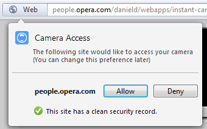
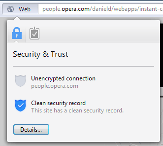
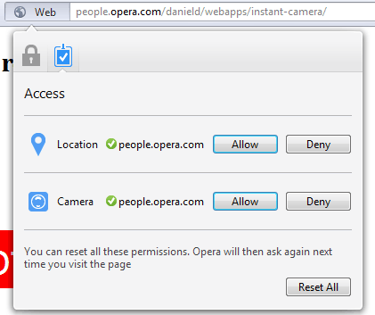
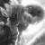

getUserMedia: accessing the camera and privacy UI
In 2011, one of the most discussed aspects of HTML5 was whether web applications would "kill" native apps that are written for specific devices in platform-dependent languages. Two years ago, access to a device's Global Positioning System was only possible through native code; now, it's trivially easy to access via a Web app using the W3C Geolocation API.
Opera co-chaired the Geolocation Working Group, and today we're advancing the Web further towards feature-parity with native applications. We're not there yet, but we're getting closer.
We were the first browser to give developers JavaScript access to a device's media capture facilities on Android, and then on desktop. This latest desktop build adds a privacy UI.
getUserMedia began life as the <device> element in the HTML5 specification. It was renamed, and then rehoused with the W3C WebRTC Working Group. The spec allows access to camera and microphone, but this build accesses camera alone.
Accessing the API
navigator.getUserMedia requires two arguments, and optionally a third. The first argument tells the device which media you require access to, and is passed as a JavaScript object. So, if you only require access to the microphone, the first argument would be {audio: true}; for video-chatting, you would use {audio: true, video: true}.
Which camera is used is left to the device: "User agents are encouraged to default to using the user's primary or system default camera and/or microphone (as appropriate) to generate the media stream."
Devices with more than one camera generally have a mechanism that allow the user to choose which one is used, so this gives the user control. Note also that the spec says "User agents may allow users to use any media source, including pre-recorded media files."
The second argument is the success callback - the code to be executed assuming that the user allows access and the device supports your request.
There is an optional third argument. This is the failure callback - the code to be executed if something went wrong. It's optional, but only optional in the same way as washing your hands before you eat is optional: if you don't do it, you leave yourself open to all sorts of bugs and your mum will shout at you.
Of course, it's important to do feature detection before making an API call to ensure that the browser and device are capable, but even if feature detection is passed, there is still much that can cause failure: the user could deny permission; the user (or device) could turn off the camera via a hardware switch, for example.
So here's how we recommend you use the API:
navigator.getUserMedia({audio: true, video: true}, success, error);
function success(stream) {
// ... use 'stream' ...
}
function error(){
//display fallback content
}
Changes from previous versions
Older Opera.Labs getUserMedia implementations used an earlier version of the specification, in which the options were passed as a string rather than a JavaScript object. This Labs build supports the older version and the new version. We plan to remove support for the older syntax.
User Experience
Allowing a website access to the camera and microphone has obvious privacy implications. The Geolocation specification requires that the user be informed which domain name is requesting access (because it may be in an iframe and therefore not corresponding with the address bar that a user can see).
The getUserMedia specification currently has nothing to say on this matter, but we are experimenting with a UI that will easily allow the user to see all permissions she has granted a particular site at once (camera, microphone, geolocation etc), as well as its security record.
Assume that you've come to a site that wants media access. You'll see a notification callout, pointing to the address bar badge next next to the URL, which tells you that the site is asking for camera access and asking you to confirm or deny.

Figure 1: Notification callout when a site requires access to your camera
Information about the site's security record is provided by Netcraft and Phishtank. As with current desktop versions of Opera, clicking on the badge provides information about a site, and choosing "details" from the dialogue allows you to report a site for phishing or fraud.

Figure 2: The site's security information. "Details" allows you to report phishing etc
New in this Labs build is a second tab, with a tickmark. This is where you can review and amend all the permissions you have granted a site.
Here's an example of a site that I've granted both camera and Geolocation access to.

Figure 3: Permissions you've granted the current site, with chance to amend them
If a site iframes content from another URL which requests access, you'll also be alerted to that. Please note that we're continually trying to improve this UI. We're interested in any feedback you have about this.
Show me the demos!
So that's the theory. What can we do with this new facility? We've enjoyed copying video into <canvas>, then manipulating the pixel data with JavaScript:
- Magical HTML5 Moustache by Richard Tibbett (the "Mr. Watson, come here" of getUserMedia demos)
- Exploding camera demo (and how-it-works tutorial)
- Relive yesteryear with Daniel's Webaroid Instant Camera that doesn't need to be put under your armpit to develop
- Real Life Colour Picker
- Warholiser
- Online Photo Booth
Now you show us yours!
This is where you take over. We'd love to see what you make with getUserMedia. Please let us know in the comments or tweet us at @odevrel.
What's next?
Of course, Webaroids and magic moustaches are fun, but unlikely to change the face of the Web. However, getUserMedia is part of a wider spec called WebRTC 1.0 Real-time Communication Between Browsers which includes a Peer-to-Peer API. The goal is in-browser video conferencing and is an initiative begun by Google and supported by Mozilla and Opera - read more at the WebRTC blog.
This article is licensed under a Creative Commons BSD License license.
Comments
-
I'm working on an HTML5 version of my Flash-based Webcam Toy app. It uses WebGL shaders + getUserMedia. Latest demo available here: http://neave.com/webcam/html5/
-

Great work Paul Neave!
-

Those latest getUserMedia demos don't seem to work with the last Opera Mobile Labs build. Can we expect a new build soon?
-
I love the new experimental UI of the badge with geolocation and camera access! I suggest to move also password notifications to the badge dialog! Here's a quick and dirty mockup: http://minus.com/mbhj8YfQZe
-
:D
-

Daniele: The thing is that camera or geo. access is often needed so the site can work properly. On the other hand you don't have to save password for the site to work correctly. Now the current version of "save password dialog" makes it possible to view the site without noticing the dialog at all.
-
good point, however the password dialog could be labeled under a different name (not "Access") in order to not mix it with other feature
-

+1 to feature access UI appreciation.
-
New UI for this is really great and more intuitive than previous horizontal bar for geolocation. Another big thing you made is that video from webcam can be used simultaneously on many sites, so it's even better for video conferences than Flash and it's not license-protected, so i expect wider use of this technology as soon as other major browsers implement it. I'm also amazed about performance, it works great even without HW acceleration (but it would be nice if I had one on my Intel HD graphics;) ). Great work!
-

Cool! with this getUserMedia and pixel manipulation feature i could make a 'simple motion detection test' http://www.youtube.com/watch?v=Ngq3QOY01xA live demo : http://goo.gl/1FHqk maybe i can try GPGPU version of it next time since 12.00 1232 has webgl enabled.
-
Bruce, did your mom shout at you when you didn't use a failure callback argument? :-) Ha ha :-)
-

spectatorx: The prev. lab build was meant to show that Opera is working on 64bit, but it is not common that lab build would consist of more than one "lab" feature. So the prev. showed x64 and this one getUserMedia.
-
Great article Bruce, so is there a labs camera build for android? like that one you showed in the last Opera tech break.
-
The camera labs build crashes every time I try to load the Magical HTML5 Moustache. Ubuntu Linux.
-
Joel Julian Salas López - a gUM build for Opera Mobile Android is in the works, but not here yet.
-

Hi guys i'm in a personal project and i know to know if you can give me a hand, i want to know if is possible to record the movie and microphone which is showed using the the object ( navigator.getUserMedia({audio: true, video: true} ) to save it in a folder.
-

Hi Chris i was reading what you told me but, i think it dows not works with gUM, another interesting point is that the microphone is not captable by te gUM jet is it? maybe im wrong! but i would like to listing your opinion.
-

@Balestrini E.
-

Thank you very much Chris.
-

Opera have support for getUserMedia (only for camera acces), but not for the microphone and Peer to Peer support, as chrome, it supports all, but only for webkit.getUserMedia.
-

stream.stop() doesn't seem to work in opera. Is there a way to stop the webcam or stop streaming after we are done with our streaming. stream.stop() works in chrome.
No new comments accepted.Paul Neave
Tuesday, January 10, 2012
Diego Schild Smiths
Tuesday, January 10, 2012
I really like your webcam app. Very funny.
Patrick O'Reilly
Tuesday, January 10, 2012
Daniele
Tuesday, January 10, 2012
Daniele
Tuesday, January 10, 2012
Martin Kadlec
Tuesday, January 10, 2012
Daniele
Tuesday, January 10, 2012
Constantine Vesna
Tuesday, January 10, 2012
Guys - any info why no audio input is available in this build ? I expect the market for VoiP is not smaller than market for video-conferencing. And testing audio is somewhat easier, because there is less data transferred.
Maciej Bałuta
Wednesday, January 11, 2012
Seung Joon Choi
Thursday, January 12, 2012
spectatorx
Friday, January 13, 2012
Anyway very nice article, and so on changes in opera labs build ;-)
P.S.
I wonder why you didn't make x64 version for windows? In previous labs build there was one.
Martin Kadlec
Friday, January 13, 2012
Julian
Wednesday, January 18, 2012
alchemist11
Sunday, January 22, 2012
Bruce Lawson
Monday, January 23, 2012
alchemist11 - haven't had anyone else tell me this; which version of Ubuntu is it and which machine?
Balestrini E.
Monday, February 13, 2012
I would really appreciate if you can help me and give me some references. Thank you.
Balestrini E.
Monday, February 27, 2012
Chris Mills
Monday, February 27, 2012
Sadly not. We are currently referring to it as camera access.
Balestrini E.
Thursday, March 1, 2012
virusgratis2
Monday, July 30, 2012
Senthil
Monday, August 20, 2012